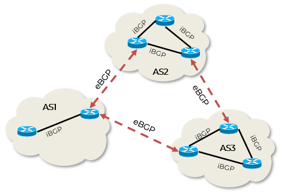
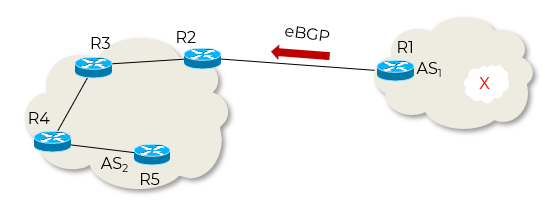
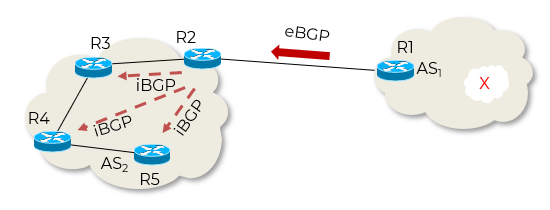
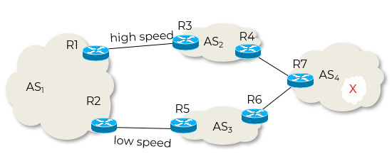
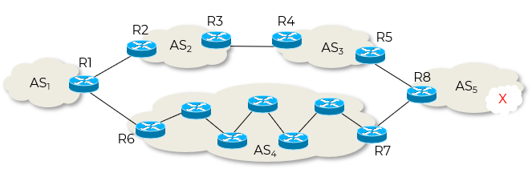
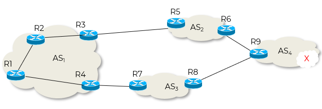
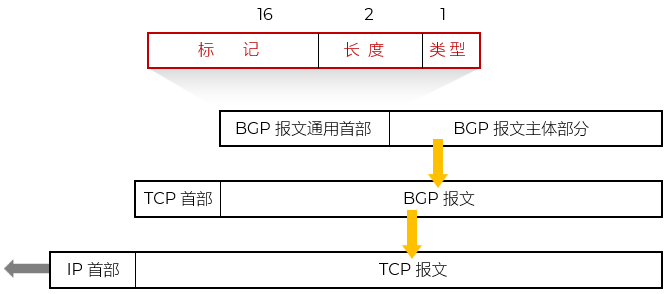

- 边界网关协议 BGP - Border Gateway Protocol
- 是构成互联网骨干网络的核心协议
- 负责在不同AS之间交换路由信息
- 基于路径向量 Path Vector 的路由选择协议
力求选择出一条能够到达目的网络且比较好的路由，而并非要计算出一条最佳路由
- 在AS边界部署边界路由器/边界网关，AS之间才可以交换可达路由信息
- 使用传输控制协议 TCP（端口 179）
可靠、面向连接
非广播
- 新版本是BGP 第 4 个版本的 BGP-4
简写为 BGP
2006 年 1 月发布
RFC 4271 ~ 4278
- 分类 Type
- eBGP - external BGP
在不同AS之间的BGP对等体（Peers）之间运行
eBGP邻居通常直连（物理上或逻辑上通过单跳），并且必须位于不同的AS中
eBGP会话默认将路由的下一跳（NEXT_HOP）属性修改为发送方的接口地址
边界路由器之间使用 eBGP 交换信息
- iBGP - internal BGP
在同一AS内部的BGP对等体之间运行
iBGP用于在AS内部传播从eBGP学到的外部路由
边界路由器使用 iBGP 向其所在AS内的所有路由器转发路由信息
要求AS内的所有路由器全连通

BGP
教材没有区分，将边界路由器/边界网关视为相同
- BGP路由
- 使用BGP路由属性描述路由信息
- 表示：经过NEXT-HOP，可达AS-PATH的 Prefix 网络
经过哪些AS到达目标网络
但没有指出经过哪些路由器
- Prefix：目标网络/网络前缀/子网掩码
- AS-PATH：从本AS到目标网络所经过的AS有序列表；每经过一个AS，就将其加入到列表
- NEXT-HOP：下一条路由器
BGP路由
| prefix |
AS-PATH |
NEXT-HOP |
[] BGP路由处理过程
- 边界路由器 R1 → 边界路由器 R2 发送BGP路由 [X, AS1, R1 ] - eBGP

eBGP发送路由
- R2 → R3R4R5 发送BGP路由 [X, AS1, R1 ]
- iBGP

iBGP发送BGP路由
- 内部路由器使用内部路由协议IGP如RIP或OSPF处理并创建自己的路由表
R3：[X, R2 ]
R4：[X, R3 ]
R5：[X, R4 ]
- 路由选择
- 方案1：本地偏好 (local preference) 值最高的路由 （默认值=100）
由管理员本地设置
无法实现负载均衡
BGP路由1：[ X, AS2, R3, LOCAL-PREF = 300 ]
BGP路由2：[ X, AS3, R5, LOCAL-PREF = 200 ]

本地偏好路由选择
- 方案2：AS 跳数最小的路由
未必是最佳路由 - 内部转发可能更多
BGP路由1：[ X, AS2 AS3 AS5 , R2, LOCAL-PREF = 200 ]
BGP路由2：[ X, AS4 AS5 , R6, LOCAL-PREF = 200 ]

AS 跳数路由选择
- 方案3：使用热土豆路由选择算法
BGP路由1：[ X, AS2 AS3 AS4 , R5, LOCAL-PREF = 200 ]
BGP路由2：[ X, AS3 AS4 , R7, LOCAL-PREF = 200 ]
尽快转发出去 - 分组在 AS 内的转发次数最少
对R2：选择路由1；R2 → R3
对R1：选择路由2；R1 → R4

热土豆路由选择
- 方案3：路由器 BGP ID 数值最小的路由
具有多个接口的路由器有多个 IP 地址，BGP ID 就使用该路由器的 IP 地址中数值最大的一个
- BGP 报文 Packet
- 使用面向连接的 TCP（端口 179）
- 按照约定/协商的时间周期性交换BGP路由
- 报文种类
OPEN 打开
UPDATE 更新；核心
KEEPALIVE 保持
NOTIFICATION 通知

BGP报文及封装
- 特点 Feature
- 高度可扩展：适用于大规模网络，如互联网骨干
- 策略控制能力强：通过丰富的属性和过滤机制，网络管理员可以精细控制路由的发布和接收
- 收敛速度慢：相比IGP，BGP的收敛较慢，但更注重稳定性
- 基于TCP：保证了可靠传输，不需要像RIP那样周期性广播
- 增量更新：只在网络变化时发送增量更新，节省带宽
- 应用 Application
- ISP之间互联：不同运营商通过eBGP交换客户路由
- 企业与ISP互联：大型企业通过BGP向ISP宣告自己的公网IP地址块
- 多宿主网络 Multi-homing ：一个AS连接到多个ISP，通过BGP实现冗余和负载均衡
- CDN和云服务提供商：用于在全球范围分发内容和服务